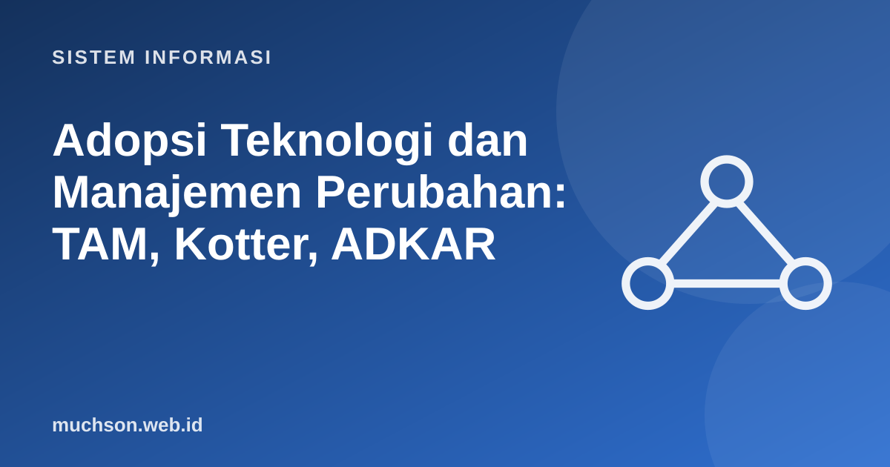

Beranda › Artikel › Sistem Informasi
Sistem InformasiAdopsi Teknologi dan Manajemen Perubahan: TAM, Kotter, ADKAR
Banyak sistem informasi yang secara teknis berhasil, tetapi gagal secara organisasi: pengguna tetap memakai spreadsheet lama, menolak mengisi data, atau mencari jalan memutar. Ilmu sistem informasi punya teori matang tentang mengapa orang mau atau enggan memakai teknologi, dan apa yang dapat dilakukan manajemen.
Sebaiknya sudah paham: konsep SI, SDLC

Setelah membaca dan mencoba materi ini, Anda mampu:
- menjelaskan Technology Acceptance Model (TAM) dan dua variabel utamanya
- menjelaskan difusi inovasi dan kategori adopter
- menjelaskan model kesuksesan SI DeLone dan McLean
- menerapkan langkah Kotter dan model ADKAR dalam rencana perubahan
- menyusun strategi adopsi: pelatihan, juara pengguna, dan umpan balik
Technology Acceptance Model (TAM)
Fred Davis (1989) mengusulkan bahwa niat dan perilaku memakai teknologi terutama dijelaskan oleh dua keyakinan: persepsi kegunaan (apakah ini membantu pekerjaan saya?) dan persepsi kemudahan penggunaan (apakah ini mudah dipakai?).
Implikasi praktis: kemudahan memengaruhi kegunaan yang dirasakan. Antarmuka yang membingungkan membuat pengguna menilai sistem kurang berguna. Dan sistem yang berguna dapat "dimaafkan" bila agak sulit, sedangkan sistem yang mudah tetapi tak berguna tetap ditinggalkan.
Difusi inovasi
Everett Rogers menggambarkan bagaimana inovasi menyebar dalam sistem sosial. Pengadopsi dibagi menurut kecepatan menerima: inovator (sekitar 2,5%), adopter awal (13,5%), mayoritas awal (34%), mayoritas akhir (34%), dan laggard (16%).
kategori = [("Inovator", 2.5), ("Adopter awal", 13.5), ("Mayoritas awal", 34), ("Mayoritas akhir", 34), ("Laggard", 16)]
total_pengguna = 800 # misal: 800 staf yang akan memakai sistem
kumulatif = 0
for nama, persen in kategori:
n = round(total_pengguna * persen / 100)
kumulatif += persen
print(f"{nama:<16}{persen:>5}% ~{n:>3} orang kumulatif {kumulatif:>5.1f}%")
print("\nTitik kritis: setelah adopter awal, 'jurang' menuju mayoritas awal (~16% kumulatif).")Inovator 2.5% ~ 20 orang kumulatif 2.5%
Adopter awal 13.5% ~108 orang kumulatif 16.0%
Mayoritas awal 34% ~272 orang kumulatif 50.0%
Mayoritas akhir 34% ~272 orang kumulatif 84.0%
Laggard 16% ~128 orang kumulatif 100.0%
Titik kritis: setelah adopter awal, 'jurang' menuju mayoritas awal (~16% kumulatif).
Mengukur kesuksesan sistem informasi
Model DeLone dan McLean (1992, diperbarui 2003) menyatakan bahwa kesuksesan dipengaruhi: kualitas sistem, kualitas informasi, dan kualitas layanan, yang memengaruhi penggunaan dan kepuasan pengguna, yang menghasilkan manfaat bersih bagi individu dan organisasi.
| Dimensi | Ukuran contoh |
|---|---|
| Kualitas sistem | Kecepatan, keandalan, kemudahan penggunaan |
| Kualitas informasi | Akurasi, kelengkapan, ketepatan waktu |
| Kualitas layanan | Responsivitas dukungan, pelatihan |
| Penggunaan dan kepuasan | Frekuensi pemakaian, survei kepuasan, SUS |
| Manfaat bersih | Waktu yang dihemat, kesalahan berkurang, biaya turun |
Mengelola perubahan
Penerapan sistem baru adalah perubahan cara kerja manusia. Dua kerangka populer membantu merencanakannya.
Delapan langkah Kotter
- Ciptakan rasa mendesak (mengapa harus berubah sekarang?)
- Bentuk koalisi pemandu yang berpengaruh
- Rumuskan visi dan strategi perubahan
- Komunikasikan visi secara luas dan berulang
- Singkirkan hambatan dan beri kewenangan bertindak
- Rencanakan dan rayakan kemenangan jangka pendek
- Konsolidasikan hasil dan teruskan perubahan
- Tanamkan pendekatan baru dalam budaya
ADKAR (Prosci): perubahan pada tingkat individu
Rencana adopsi yang realistis
Resistensi sering kali adalah informasi, bukan sekadar hambatan. Pengguna yang menolak mungkin menunjukkan fitur yang hilang, alur yang tidak sesuai kenyataan, atau beban kerja bertambah tanpa imbalan. Dengarkan dulu sebelum memaksa.
1. Sistem presensi baru ditolak guru karena dianggap menambah pekerjaan. Variabel TAM mana yang tampaknya bermasalah?
2. Susun tiga tindakan untuk "kemenangan jangka pendek" pada penerapan sistem akademik baru.
3. Mengapa pelatihan sekali di awal tidak cukup?
4. Apa risiko menjalankan sistem lama dan baru bersamaan tanpa batas waktu?
- TAM: persepsi kegunaan dan kemudahan menentukan niat memakai.
- Difusi inovasi: lima kategori adopter; strategi berbeda untuk tiap kelompok.
- DeLone–McLean: kualitas sistem, informasi, layanan → pemakaian dan kepuasan → manfaat.
- Kotter untuk perubahan organisasi, ADKAR untuk perubahan individu.
- Adopsi direncanakan sejak awal proyek, bukan setelah peluncuran.
Tanya jawab
Apakah TAM cukup menjelaskan adopsi di organisasi?
Bagaimana mengukur adopsi?
Mengapa proyek TI sering gagal pada tahap adopsi?
Referensi
- Fred D. Davis, Perceived Usefulness, Perceived Ease of Use, and User Acceptance of Information Technology, MIS Quarterly 13(3), 1989
- Venkatesh, Morris, Davis, Davis, User Acceptance of Information Technology: Toward a Unified View, MIS Quarterly 27(3), 2003
- John P. Kotter, Leading Change (Harvard Business Review Press, 1996)
- Everett Rogers, Diffusion of Innovations (Free Press, edisi ke-5, 2003)